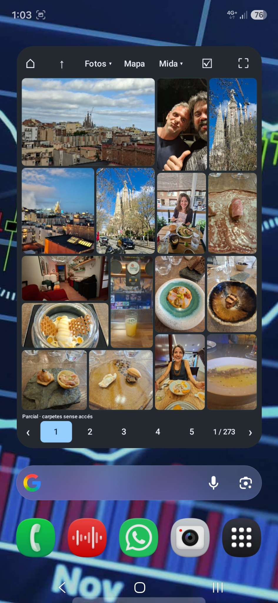
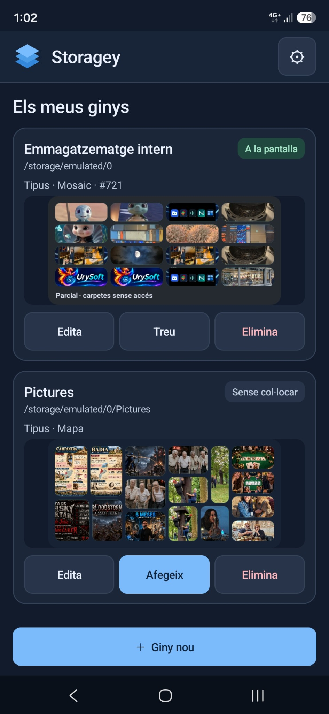
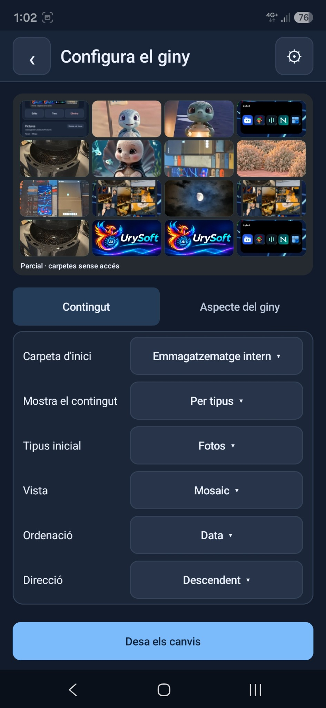
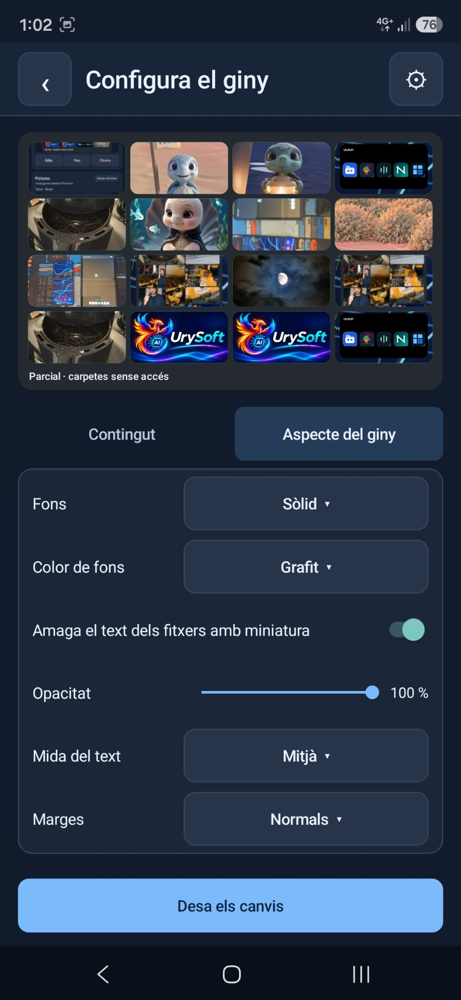
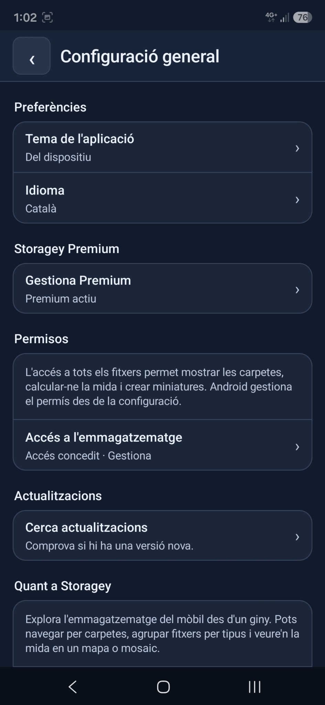

Storagey
4.1.5 · Android
Descubre qué ocupa espacio en tu móvil
Mira cuánto almacenamiento te queda y explora carpetas y tipos de archivo con mapas visuales. Coloca un widget en la pantalla de inicio para tenerlo siempre a mano.
Descargar gratis para AndroidQué puedes hacer
- Ver el espacio usado y disponible de un vistazo.
- Explorar por carpetas o tipos de archivo y distinguir los elementos más grandes.
- Guardar configuraciones de widgets con distintas carpetas de inicio.
Android 11 o posterior. Los controles interactivos del widget están disponibles desde Android 12.
Gratis y Premium
Gratis: un widget activo y configuraciones guardadas ilimitadas.
Premium: varios widgets activos por 6 € al año, con renovación automática en PayPal.
Puedes contratar Premium en la app y recuperarlo con la misma cuenta de Google al cambiar de móvil.
Storagey en imágenes
Desliza para ver todas las capturas.









